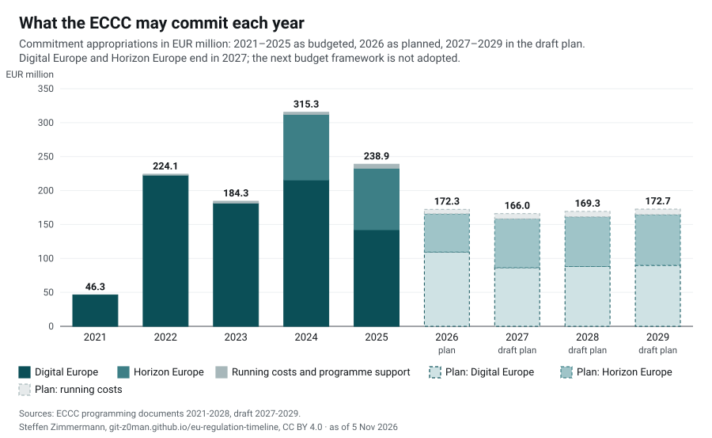
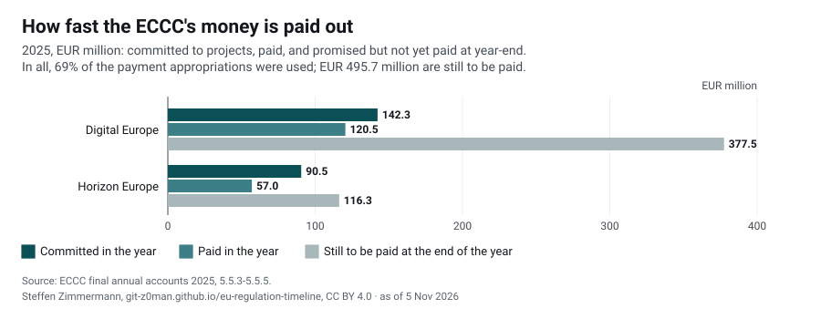
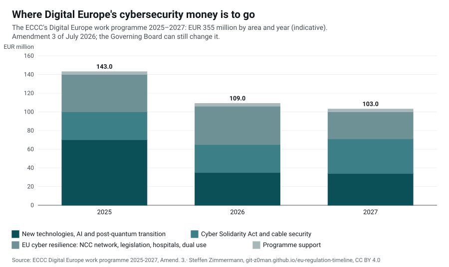
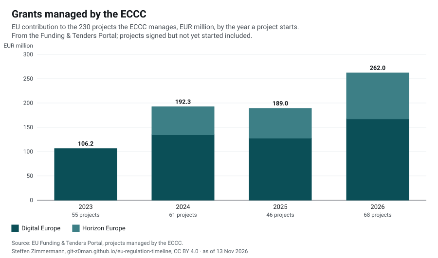
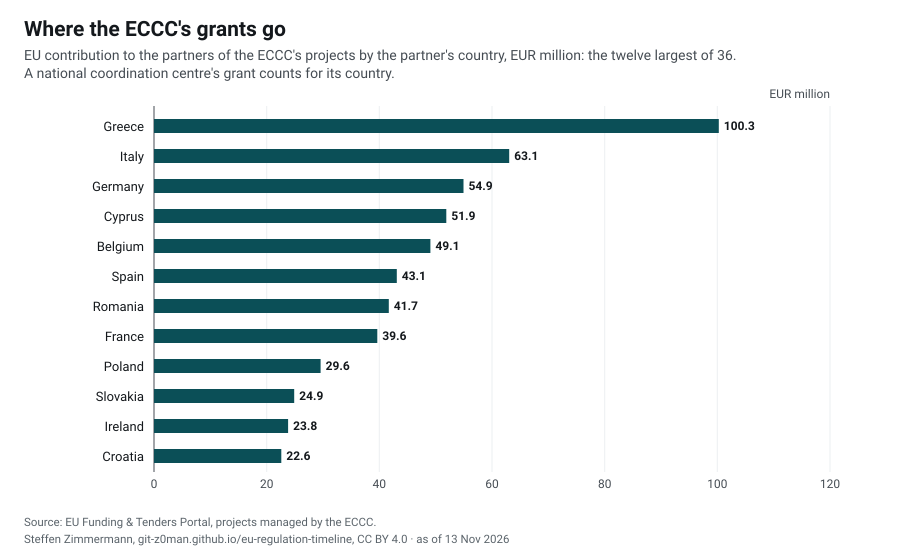
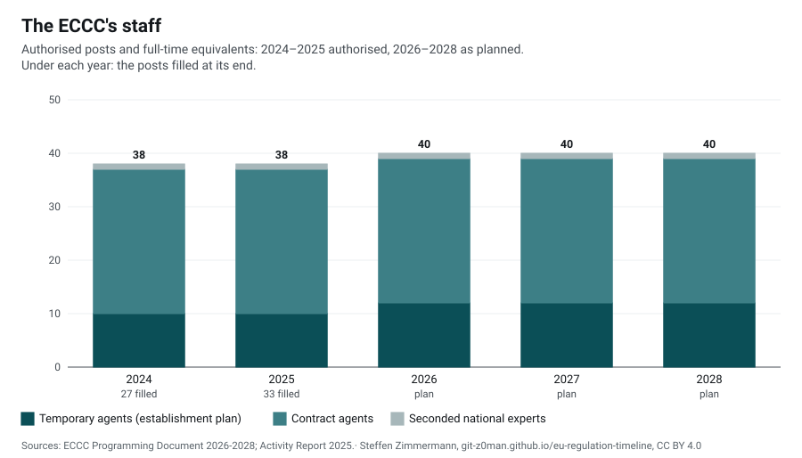

Regulations › Authorities › ECCCas of 5 Nov 2026
European Cybersecurity Industrial, Technology and Research Competence Centre (ECCC)
The EU body that funds cybersecurity, set up in 2021 in Bucharest with the Network of National Coordination Centres. It implements the cybersecurity parts of the Digital Europe Programme, whose work programme it adopts, and of Horizon Europe, and the funding actions of the Cyber Solidarity Act (Cyber Hubs, preparedness, mutual assistance). Financially autonomous since September 2024; its mandate ends on 31 December 2029 unless it is extended.
EUR 238.3 million committed, EUR 182.0 million paid
69% of the payment appropriations were used; at the end of the year EUR 495.7 million were promised to projects and not yet paid, up from EUR 442.7 million a year before.
On this page
- 1Our analyses
- 2Finances
- 3Where the money goes
- 4Staff
- 5Contracts awarded
- 6Relation to the acts
- 7Documents
- 8Sources
Our analyses
- Analysis · 5 Nov 2026The ECCC: EUR 730 million in cybersecurity grants, paid out slowly, and a mandate that ends in 2029The European Cybersecurity Competence Centre in Bucharest now manages 224 projects worth EUR 730 million from Digital Europe and Horizon Europe. Its budget peaked in 2024 and falls to about EUR 170 million a year; payments lag behind commitments by more than two years' worth. What comes after 2027 is open: Digital Europe is to merge into a Competitiveness Fund, and the Centre itself is set up only until the end of 2029. (also in German: Das ECCC: 730 Mio. EUR Fördermittel für Cybersicherheit, langsam ausgezahlt, und ein Mandat, das 2029 endet)
Finances
The ECCC is funded by the Union (Art. 21 ECCC Regulation): almost all of its budget is money of the Digital Europe Programme and, since its financial autonomy, of Horizon Europe through a contribution agreement with the Commission. It commits that money to calls and procurements and pays it out over several years. The Member States may join joint actions with voluntary contributions; none has contributed so far (accounts 2025). The amounts are commitment appropriations: what the ECCC may commit in a year. Until 24 September 2024 the Commission implemented the budget; the ECCC's own accounts begin then.



The figures as a table
| Year | Digital Europe | Horizon Europe | Running costs and programme support | Total | Stage |
|---|---|---|---|---|---|
| 2021 | 46.3 | 0.0 | 0.0 | 46.3 | budget |
| 2022 | 222.8 | 0.0 | 1.4 | 224.1 | budget |
| 2023 | 181.5 | 0.0 | 2.8 | 184.3 | budget |
| 2024 | 215.7 | 96.5 | 3.1 | 315.3 | budget |
| 2025 | 142.3 | 90.5 | 6.0 | 238.9 | budget |
| 2026 | 109.4 | 56.2 | 6.7 | 172.3 | plan (programming document) |
| 2027 | 86.4 | 71.8 | 7.9 | 166.0 | draft plan |
| 2028 | 88.1 | 73.2 | 8.0 | 169.3 | draft plan |
| 2029 | 89.8 | 74.7 | 8.2 | 172.7 | draft plan |
2021: Digital Europe only: the part of its Specific Objective 3 for the Centre in 2021.
2024: The first Horizon Europe money came with the financial autonomy in September 2024 (EUR 96.5 million).
2025: Digital Europe includes EUR 42.6 million carried over from earlier years, net of the EUR 15 million returned to the EU budget (accounts 2025, 5.1.3).
After 2027: Digital Europe and Horizon Europe run until 2027. The figures for 2028 and 2029 are what the draft programming document envisages under the next multiannual financial framework, which is not adopted; 2029 is "subject to the ECCC mandate and the DEP Work Programme", as the mandate ends that year. The ECCC Regulation allows up to EUR 1 649 566 000 from Digital Europe for 2021-2027, of which up to EUR 32 million for administrative costs (Art. 21(3)(a)).
How fast the money is paid out



The figures as a table
| Programme | Committed | Paid | Outstanding at year-end |
|---|---|---|---|
| Digital Europe | 142.3 | 120.5 | 377.5 |
| Horizon Europe | 90.5 | 57.0 | 116.3 |
| Running costs and programme support | 5.4 | 4.5 | 2.0 |
| Total | 238.3 | 182.0 | 495.7 |
The accounts explain the low payment rate with "delays in project reporting and assessment, including the late submission of interim reports and the suspension of reporting periods" (5.1.3). Of the payment appropriations for Digital Europe, 65 % were used; EUR 65.8 million may be entered again in a later budget (Art. 12 of the ECCC's financial rules). Commitments outstanding at the end of 2025, EUR 495.7 million, are what has been promised to projects and not yet paid: more than two and a half years of the payments of 2025.
Member States: No Member State has contributed to the ECCC's budget up to 31 December 2025; no joint action has been defined (accounts 2025, 5.1.3; activity report 2025, 1.1).
Where the money goes
Funding


The figures as a table
| Area | 2025 | 2026 | 2027 | Total |
|---|---|---|---|---|
| New technologies, AI and post-quantum transition | 70 | 35 | 34 | 139 |
| Cyber Solidarity Act and cable security | 30 | 30 | 37 | 97 |
| EU cyber resilience: NCC network, legislation, hospitals, dual use | 40 | 41 | 29 | 110 |
| Programme support | 3 | 3 | 3 | 9 |
EUR 355 million for 2025-2027, after EUR 35 million were reallocated to support the AI Gigafactories (Governing Board, 2-3 July 2025); EUR 42 million of it were carried over from 2022. Legislation includes "strengthening EU cybersecurity capacities & capabilities in line with legislative requirements" (EUR 32 million in 2026-2027).
Competition for the calls
The calls whose evaluation the activity report of 2025 gives: proposals received and retained for funding.
| Call | Programme | Budget (EUR million) | Proposals | Retained | Share retained |
|---|---|---|---|---|---|
| DIGITAL-ECCC-2024-DEPLOY-CYBER-07 | Digital Europe | 102.8 | 172 | 32 | 19% |
| DIGITAL-ECCC-2025-DEPLOY-CYBER-08 | Digital Europe | 55.0 | 61 | 16 | 26% |
| HORIZON-CL3-2024-CS-01 | Horizon Europe | 60.4 | 152 | 12 | 8% |
| HORIZON-CL3-2025-02-CS-ECCC | Horizon Europe | 90.5 | 265 | 15 | 6% |
Grants managed by the ECCC
224 projects with an EU contribution of EUR 729.8 million in all, 162 of them ongoing, as the Funding & Tenders Portal lists them (read on every weekday by our funding tool; the projects and their partners are on the funding page).



The figures as a table
| Start year | Digital Europe: projects | Digital Europe: EUR million | Horizon Europe: projects | Horizon Europe: EUR million |
|---|---|---|---|---|
| 2023 | 55 | 106.2 | 0 | 0.0 |
| 2024 | 49 | 134.5 | 12 | 57.8 |
| 2025 | 35 | 127.6 | 11 | 61.3 |
| 2026 | 49 | 156.7 | 13 | 85.7 |



The figures as a table
| Country | EU contribution (EUR million) | Partners (coordinators and participants) |
|---|---|---|
| Greece | 96.6 | 274 |
| Italy | 63.1 | 118 |
| Germany | 54.6 | 102 |
| Cyprus | 48.3 | 137 |
| Belgium | 45.9 | 99 |
| Spain | 42.1 | 116 |
| France | 38.9 | 78 |
| Romania | 38.2 | 104 |
| Poland | 29.6 | 43 |
| Slovakia | 24.9 | 23 |
| Ireland | 23.8 | 32 |
| Croatia | 21.9 | 32 |
| Netherlands | 19.0 | 36 |
| Luxembourg | 19.0 | 38 |
| Norway | 18.8 | 26 |
| Austria | 17.8 | 35 |
| Slovenia | 14.9 | 38 |
| Czechia | 13.9 | 20 |
| Estonia | 10.7 | 27 |
| Sweden | 10.5 | 8 |
| Portugal | 9.8 | 28 |
| Denmark | 9.2 | 10 |
| Lithuania | 8.9 | 19 |
| United Kingdom | 8.8 | 17 |
| Finland | 8.3 | 13 |
| Iceland | 7.2 | 15 |
| Latvia | 7.2 | 10 |
| Bulgaria | 6.7 | 24 |
| Hungary | 4.2 | 10 |
| Malta | 2.5 | 3 |
| Israel | 1.4 | 3 |
| Türkiye | 1.0 | 6 |
| Switzerland | 1.0 | 2 |
| Ukraine | 0.6 | 3 |
| Serbia | 0.6 | 2 |
Open and upcoming calls (18)
| Deadline | Call | Programme | Budget |
|---|---|---|---|
| AENAON Open Call 1 Call of the project AENAON (funded under DIGITAL-ECCC-2024-DEPLOY-CYBER-07-LARGEOPER) | Digital Europe | 2.1 million EUR | |
| Cyber Security Boost: Support for the development, pilot testing and wider adoption of solutions for cyber resilience. Call of the project NCC-CZ 2.0 (funded under DIGITAL-ECCC-2024-DEPLOY-NCC-06-MS-COORDINATION) | Digital Europe | 1.2 million EUR | |
| Innovation Funding for Estonian Cybersecurity Companies for developing innovative, high value-added products and services Call of the project NCCEE2 (funded under DIGITAL-ECCC-2024-DEPLOY-NCC-06-MS-COORDINATION) | Digital Europe | 1.5 million EUR | |
| CIPHER Open Call 1 Call of the project CIPHER (funded under DIGITAL-ECCC-2024-DEPLOY-CYBER-07-LARGEOPER) | Digital Europe | 4.3 million EUR | |
| Strengthening cybersecurity capacities of European SMEs with cybersecure AI-powered solutions DIGITAL-ECCC-2027-DEPLOY-CYBER-11-AI4SME · 5 grants | Digital Europe | 20.0 million EUR | |
| Coordinated preparedness testing and other preparedness actions DIGITAL-ECCC-2027-DEPLOY-CYBER-11-COORDPREP · 10 grants | Digital Europe | 15.0 million EUR | |
| Cybersecure tools, technologies and services relying on AI DIGITAL-ECCC-2027-DEPLOY-CYBER-11-CYBERAI · 4 grants | Digital Europe | 15.0 million EUR | |
| Dual-use technologies DIGITAL-ECCC-2027-DEPLOY-CYBER-11-DUALUSE · 3 grants | Digital Europe | 10.0 million EUR | |
| Strengthening EU cybersecurity capacities & capabilities in line with legislative requirements DIGITAL-ECCC-2027-DEPLOY-CYBER-11-EULEG · 5 grants | Digital Europe | 20.0 million EUR | |
| Enhancing the NCC Network DIGITAL-ECCC-2027-DEPLOY-CYBER-11-NCC · 4 grants | Digital Europe | 11.0 million EUR | |
| Regional Cable Hubs DIGITAL-ECCC-2027-DEPLOY-CYBER-11-REGCABH · 2 grants | Digital Europe | 5.0 million EUR | |
| Cross-border Cyber Hubs DIGITAL-ECCC-2027-DEPLOY-CYBER-12-CBCH | Digital Europe | 2.0 million EUR | |
| National Cyber Hubs DIGITAL-ECCC-2027-DEPLOY-CYBER-12-NATCH | Digital Europe | 2.0 million EUR | |
| Financial support for start-ups registered in Estonia for developing new cybersecurity tools or services (Cyber Accelerator) Call of the project NCCEE2 (funded under DIGITAL-ECCC-2024-DEPLOY-NCC-06-MS-COORDINATION) | Digital Europe | 1.1 million EUR | |
opens 2 Mar 2027 | Artificial Intelligence for Cybersecurity applications HORIZON-CL3-2027-02-CS-ECCC-01 · 5 grants | Horizon Europe | 24.8 million EUR |
opens 2 Mar 2027 | Secure Computing Continuum (IoT, Edge, Cloud, Data spaces) HORIZON-CL3-2027-02-CS-ECCC-02 · 5 grants | Horizon Europe | 24.0 million EUR |
opens 2 Mar 2027 | Secure PQC implementations, Cryptanalysis and Post-quantum Digital Trust HORIZON-CL3-2027-02-CS-ECCC-03 · 3 grants | Horizon Europe | 19.0 million EUR |
opens 2 Mar 2027 | New primitives and protocols for functionalities of future hybrid classical-hybrid and quantum networks HORIZON-CL3-2027-02-CS-ECCC-04 · 1 grant | Horizon Europe | 4.0 million EUR |
Staff



The figures as a table
| Year | Temporary agents | Contract agents | Seconded experts | Total | Filled at year-end |
|---|---|---|---|---|---|
| 2024 | 10 | 27 | 1 | 38 | 27 |
| 2025 | 10 | 27 | 1 | 38 | 33 |
| 2026 (plan) | 12 | 27 | 1 | 40 | – |
| 2027 (plan) | 12 | 27 | 1 | 40 | – |
| 2028 (plan) | 12 | 27 | 1 | 40 | – |
Posts filled: 27 of 38 at the end of 2024 (6 temporary agents, 21 contract agents), 33 at the end of 2025 (8 and 25; the seconded national expert joins in 2026). Of 15 job offers in 2025, 7 were declined, all for officer posts (activity report 2025, 2.5). The programming document says the low correction coefficient for salaries in Romania makes them less competitive and the staff less diverse (seven nationalities at the end of 2024). Two posts were added for 2026.
Contracts awarded
ProcurementContract award notices of ECCC as the only buyer on Tenders Electronic Daily, the last two years: 3 of 3 since 28 Jun 2021. The value is the maximum of a framework contract or the contract value as the notice gives it, not what was paid; values of notices on the same procedure overlap and are not added up. Joint procurements of many EU bodies are left out (12). Checked 5 Nov 2026.
| Published | Contract | EUR million | Contractors |
|---|---|---|---|
| 29 Jul 2026 | ATHENA Cross border SOCs platform | 4.92 | named in the notice |
| 19 Nov 2025 | Provision of interim support services for the European Cybersecurity Competence Centre in Bucharest, Romania | 4.50 | CIVITTA STRATEGY & CONSULTING SA, CIVITTA EESTI AS |
| 12 May 2025 | Provision of interim support services for the European Cybersecurity Competence Centre in Bucharest, Romania | 0.70 | named in the notice |
Relation to the acts
Every act in our collection whose text names ECCC: the articles that do, in the latest published text, or in the Commission proposal while an act is pending. Found in the texts, not listed by hand; the role is our one-line summary.
| Act | Status | Role | Articles | Where |
|---|---|---|---|---|
| ECCC Regulation | Law | Mission, tasks and governance (Art. 3-20); funded by the Union, joint actions also by Member States (Art. 21); up to EUR 1 649 566 000 from Digital Europe (Art. 21(3)(a)); set up until 31 December 2029 (Art. 47). | 43 | Art. 1, 2, 3, 4, 5, 6, 7, 8, 9, 10, 11, 12, 13, 14, 16, 17, 18, 19, 20, 21, 22, 23, 25, 26, 27, 28, 29, 30, 31, 32, 33, 34, 36, 37, 38, 39, 40, 41, 42, 44, 45, 46, 47 · text |
| Cyber Solidarity Act (CSOA) | Law | Selects Member States and Hosting Consortia for the joint procurement of Cyber Hub tools and may fund their operation (Art. 9 CSoA), maps the tools every two years (Art. 9(4)); implements the Cybersecurity Emergency Mechanism, except the Reserve (Art. 10(4)). | 4 | Art. 5, 9, 10, 22 · text |
| Cyber Resilience Act (CRA) | Law | Supports skills (Art. 10 CRA) and the testing and conformity assessment of micro and small enterprises (Art. 33(1)(c) CRA), where relevant. | 2 | Art. 10, 33 · text |
| Cybersecurity Act 2 (CSA2) | Proposal | Would be a permanent observer on ENISA's Management Board (Art. 27(4)), supported by ENISA with information on risks and threats (Art. 6, point (14)) and cooperating with it (Art. 68(1)) (proposal). | 3 | Art. 6, 27, 68 · text |
Documents
Texts7 documents of ECCC in our collection: 4 programming and work programmes, 2 annual accounts, 1 report. Drafts for consultation are marked; the newest first.
| Date | Document | Type | Acts |
|---|---|---|---|
| 2 Jul 2026 | ECCC Digital Europe Cybersecurity Work Programme 2025-2027 (Amendment 3) | Programming and work programmes | ECCC Regulation, Cyber Solidarity Act, Cyber Resilience Act, NIS 2 Directive |
| 29 Jun 2026 | ECCC Final Annual Accounts 2025 | Annual accounts | ECCC Regulation |
| 29 Jun 2026 | ECCC Consolidated Annual Activity Report 2025 | Reports | ECCC Regulation, Cyber Solidarity Act, NIS 2 Directive, Cyber Resilience Act |
| 30 Jan 2026 | ECCC Draft Single Programming Document 2027-2029 (draft) | Programming and work programmes | ECCC Regulation, Cyber Solidarity Act |
| 9 Jan 2026 | ECCC Single Programming Document 2026-2028 | Programming and work programmes | ECCC Regulation, Cyber Solidarity Act, NIS 2 Directive, Cyber Resilience Act |
| 30 Jun 2025 | ECCC Final Annual Accounts 2024 | Annual accounts | ECCC Regulation |
| 17 Mar 2023 | ECCC Strategic Agenda · text | Programming and work programmes | ECCC Regulation, NIS 2 Directive, Cyber Resilience Act |
Sources
- ECCC Single Programming Document 2021-2023 (Governing Board Decision No 2021/8): Annex III, Table 1 (budget 2021)
- ECCC Single Programming Document 2022-2024 (Governing Board Decision No 2022/6): Annex III, revenue table (budget 2022)
- ECCC Single Programming Document 2023-2025 (Governing Board Decision No 2022/24): Annex III, revenue table (budget 2023)
- ECCC Single Programming Document 2026-2028: Annex III, Tables 1, 2 and 4a (2024 executed, 2025, 2026); Annex IV, Tables 1 and 2 (staff)
- ECCC Draft Single Programming Document 2027-2029: Annex III, Tables 1 and 4a (2027 request, 2028 and 2029 envisaged); note (5): 2029 is subject to the ECCC mandate and the work programme
- ECCC Final Annual Accounts 2024: 5.1.3, 5.2 and 5.4 (budget implementation 2024, before and after autonomy)
- ECCC Final Annual Accounts 2025: 5.1.3, 5.2, 5.5.3-5.5.5 (commitments, payments, outstanding commitments)
- ECCC Consolidated Annual Activity Report 2025: 1.1 (calls, proposals, grants), 2.5 and Annex IV (staff)
- ECCC Digital Europe Cybersecurity Work Programme 2025-2027, Amendment 3: 1.4 and the table of areas and topics (indicative budget per year)
- ECCC Strategic Agenda (March 2023): the whole document
- Regulation (EU) 2021/887 (ECCC Regulation) (text): Art. 21(3), 38, 46 and 47
- Commission proposal for a Cybersecurity Act 2, COM(2026) 11, legislative financial statement (text): financial statement, 1.5.4 (the ECCC and the European Competitiveness Fund)
- EU Funding & Tenders Portal, projects managed by the ECCC: the projects, their partners and the open calls, read on every weekday (the funding overview of this site)
- Tenders Electronic Daily, contract award notices: the notices with the ECCC as the only buyer